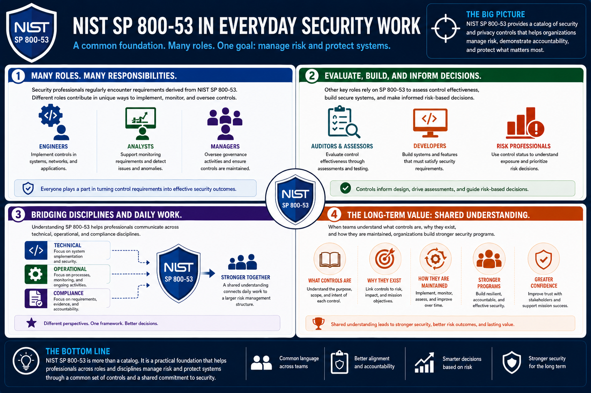

What Is NIST SP 800-53?
Why Security Professionals Should Understand It
Connecting to LMS... Progress: in progress
Version 1.0 | Date: 2026-06-16 | Introductory overview of NIST SP 800-53 security and privacy controls.

Narration
Security professionals regularly encounter requirements derived from NIST SP 800-53. Engineers implement controls, analysts support monitoring requirements, and managers oversee governance activities.
Auditors and assessors evaluate control effectiveness. Developers build systems that must satisfy security requirements. Risk professionals use control status to understand exposure and prioritize decisions.
Understanding SP 800-53 helps professionals communicate across technical, operational, and compliance disciplines. It connects daily work to a larger risk management structure.
The long-term value is shared understanding. When teams understand what controls are, why they exist, and how they are maintained, they can build stronger and more accountable security programs.